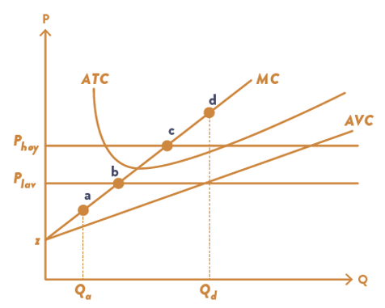
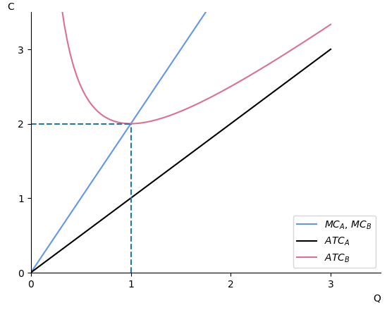
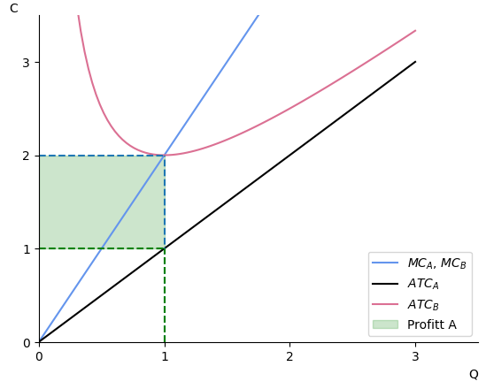
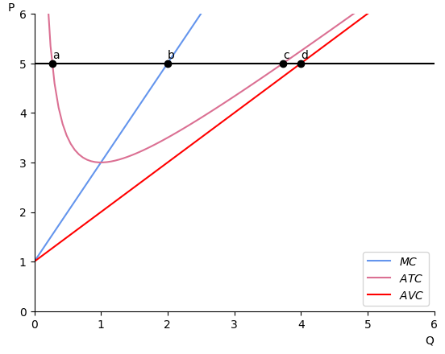
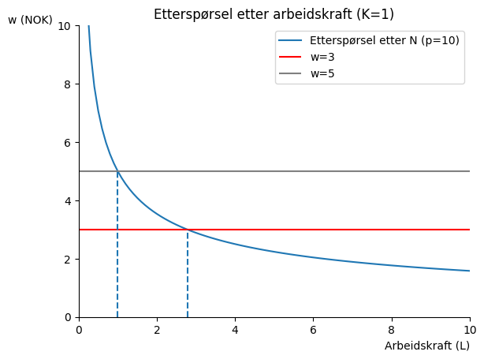

Kapittel 7 - Produksjonsteori Profittmaksimering#
Notatblokken lastes enklest ned på uit-sok-1303-v26/uit-sok-1303.v26.github.io
Bedriftens innteker.#
Når bedriften selger én enhet på produktmarkedet får den en fast pris på \(P\). Med \(Q\) solgte enheter får bedriften en inntekt på \( PQ.\)
Det vil si at gjennomsnittsinntekt per enhet solgt er \(\frac{PQ}{Q}=P\), og grenseinntekten er \(\frac{dPQ}{dQ}=P\).
For å produsere goder eller tjenester må bedriften ansette produksjonsfaktorer, noe som gir bedriften en kostnad. Kostnaden kan være fast, dvs uavhengig av hvor mange enheter som produseres: \(FC=rK_0.\) Produksjonsavhengige kostnader er variable kostnader \(VC\) som avhenger av mengden produsert. Totale kostnader blir da summen av disse: \(TC=FC+V.\)
Dersom bedriften produserer én enhet ekstra ut fra dagens produksjonsnivå vil økningen i kostnaden kjennetegnes av grensekostnaden (MC):
Beløpet som det koster bedriften per enhet produsert er den totale gjennomsnittskostnaden (\(ATC\)), og dette er summen av faste gjennomsnittskostnader (\(AFC\)) og variable gjennomsnittskostnader (\(AVC\)):
Profittmaksimering#
På kort sikt vil minst én produksjonsfaktor være fast, og dette vil utgjøre en del av bedriftens faste kostnader. Dersom bedriften produserer et produkt ved å kombinere kapital og arbeidskraft, og har en fast mengde med kapital på kort sikt (\(K_0\)) vil \(rK_0\) være en del av bedriftens faste kostnad. Bedriften kan endre produksjon kun ved å endre mengde arbeidskraft som er brukt i produksjonsprosessen.
Vi kan skrive fortjenesten som en funksjon av produsert mengde \(F(Q)\):
Vi kan se at fortjeneste er positiv dersom \(PQ>VC+FC\), dvs
Prisen (gjennomsnittsinntekten) må være større enn gjennomsnittskostnaden for positiv fortjeneste. I tillegg til dette er vi ute etter verdien på \(Q\) som maksmimerer \(F(Q)\). Betingelsen for maksinal profitt er
Med ord: prisen (her grenseinntekten) må være lik grensekostnaden for et maksimum. Dersom \(P>MC\) kan bedriften øke fortjeneste ved å selge en ekstra enhet, og produksjon kan ikke ha vært optimal. Dersom \(P<MC\) har bedriften tapt penger på den siste enheten solgt, og kunne ha redusert produksjon for å øke fortjeneste. Da kan ikke denne produksjonen ha vært optimal.
Profittmaksimering og lønnsomhet#
Vi har følgende produktfunksjon:
Fra forelesning Kapittel 6, matteboks 6.1 vet vi at grensekostnaden er gitt ved
Profittmaksimum der \(P=MC\), som blir
# Optimal profitt
import sympy as sp
import matplotlib.pyplot as plt
import numpy as np
Q, K, K_0, L, P, w,r,z = sp.symbols('Q K K_0 L P w r z', real=True, positive=True)
def F(Q):
return (P-(2*w*Q)/K_0)-z
F(Q)
# Optimalt kvantum
Q_sol=sp.solve (F(Q),Q)[0]
Q_sol

Figuren vis optimal tilpasning på lang sikt i punkt \(c\), der \(P_{høy}=MC\)
I oppgavene så må dere nå kombinere forrige kapittel med dette#
7.2 Superprofitt i lakseoppdrett#
Du er utnevnt som sekretær i et utvalg som skal se på beskatning i havbruket, og har fått i oppdrag av uvalgslederen å bruke mikroøkonomisk teori til å si noe om lønnsomheten i næringen. Anta at lakseproduksjonen er gitt ved produktfunksjonen \(Q = K^{0.5}S^{0.5}\), der \(K\) er naturkapital og \(S\) er smolt (altså laksebabyer) som oppdretterne kjøper inn og videreforedler til ferdig laks.
Naturen er en gitt faktor, et konsesjonsområde, hvor både størrelsen på anlegget og antall i næringen er regulert av staten. Anta at størrelsen på hver konsesjon er gitt ved \(K_0 = 1\). Tidligere ble konsesjonene delt ut gratis, mens produsentene i de siste årene har måttet betale for dem. Lakseprodusent \(A\) var tidlig ute og fikk konsesjonen gratis, \(r_A = 0\), mens \(B\) kom til senere og måtte betale en pris \(r_B = 1\). Prisen på smolt er lik for begge produsentene og gitt ved \(s = 1\).
a) Regn ut kostnadene (grensekostnader, gjennomsnittlige variable kostnader, gjennomsnittlige totale kostnader) for produsent \(A\) og \(B\) og illustrer.
Starter med å skrive inn Cobb-Douglas-produktfunksjonen.
S,K_0,w,r,Q,C,z, L,K = sp.symbols('S K_0 w r Q C z L K')
#k_0 = 1, w = 1, z = 0
K_0 = 1
w = 1
z = 0
# Definerer balansert cobb-douglas-funksjon
cobb_doug = sp.Eq(Q, K_0**0.5 * S**0.5)
cobb_doug
# Løser for S, følger boken
S_losning = sp.solve(cobb_doug, S)[0]
S_losning
# Fra matteboks 6.1 er kostnadene definert som
C = w*S_losning/K_0 + z*Q+ r*K_0
C
Grensekostnadene er lik for begge produsentene, og er gitt ved \(MC = \frac{dC}{dQ}\).
# Finner grensekostnaden ved å derivere C med hensyn på Q
MC = sp.diff(C, Q)
MC
Siden de er like blir da bare
# Definerer grensekostnaden som en funksjon for å plotte
def MC_plot(Q):
return 2 * Q
# Fra matteboks 6.1, gjennomsnittlige variable kostnader
VC = w*Q/K_0 + z
# Fra matteboks 6.1, gjennomsnittlige faste kostnader
FC = r*K_0/Q
# Fra matteboks 6.1, gjennomsnittlige totale kostnader
ATC = VC + FC
# Definerer ATC som en funksjon for å plotte
def ATC_plot(Q,r):
return Q + r/Q
# ATC_A, blir bare Q
ATC_plot(Q,0)
# ATC_B, blir Q + 1/Q
ATC_B =ATC_plot(Q,1)
# Deriverer for å finne minimum
ATC_B_derivert = sp.diff(ATC_B, Q)
ATC_B_derivert
# Løser for Q, henter ut løsning med positiv verdi
Q_losning = sp.solve(ATC_B_derivert, Q)[1]
Q_losning
# Substituerer inn for K = 1 og Q = 1
ATC_B_losning = ATC_B.subs([(K,1), (Q,Q_losning)])
ATC_B_losning
Nå kan vi lage figuren
# Figurkonfigurasjon
def create_ax():
fig, ax = plt.subplots()
ax.set_xlabel('Q', loc = "right")
ax.set_ylabel('C', rotation=0, loc ='top')
ax.set_ylim(0, 3.5)
ax.set_xlim(0, 3.5)
ax.set_xticks(np.arange(0, 4, 1))
ax.set_yticks(np.arange(0, 4, 1))
ax.spines["top"].set_visible(False)
ax.spines["right"].set_visible(False)
return fig, ax
Q_verdier = np.linspace(0.001, 3, 100)
fig, ax = create_ax()
# Tegner ATC og MC
ax.plot(Q_verdier, MC_plot(Q_verdier), label = "$MC_A$, $MC_B$", color = "cornflowerblue")
# r = 0 for ATC_A, r = 1 for ATC_B
ax.plot(Q_verdier, ATC_plot(Q_verdier,0), label = "$ATC_A$", color = "black")
ax.plot(Q_verdier, ATC_plot(Q_verdier,1), label = "$ATC_B$", color = "palevioletred")
# Tegner linjer for MC og ATC_B
ax.hlines(ATC_B_losning,0,Q_losning, linestyles = "--")
ax.vlines(Q_losning,0,ATC_B_losning, linestyles = "--")
ax.legend();

b) Sammenlign profitten for de to produsentene dersom prisen på laks er \(P = 2\).
For å profittmaksimere må vi huske at vi må sette prisen lik grensekostnaden, så \(P = MC\).
For \(P = 2\) og \(MC = 2Q\) så velger produsentene \(Q_A = Q_B = 1\), siden pris her er lik grensekostnad, som er kriteriet for maksimal profitt. Vi ser at for produsent \(B\) så har vi en situasjon med null profitt, siden prisen er lik de gjennomsnittlige totale kostnadene.
Produsent \(A\), derimot, har profitt:
Dette kan vi vise med å bruke funksjonen fill_between i matplotlib, som fyller området mellom to kurver, i dette tilfellet mellom prisen og gjennomsnittlige totale kostnader for produsent \(A\). Forskjellen i profitt mellom \(A\) og \(B\) skyldes det faktum at \(A\) har fått kosesjonene gratis.
Produsent \(A\) har med dette en “superprofitt”, som man ofte referer til som en ressursrente eller grunnrente. For produsent \(B\) tilfaller grunnrenten staten, som har solgt konsesjonen for en pris \(r\).
# Setter P = 2
P = 2
# Setter P = MC
profitt_max = sp.Eq(P, MC)
profitt_max
# Løser for Q
Q_løsning_2 = sp.solve(profitt_max, Q)[0]
Q_løsning_2
ATC_A = ATC_plot(Q_løsning_2, 0)
ATC_A
# Tegner linjer for MC og ATC_A
ax.hlines(ATC_A,0,Q_løsning_2, linestyles = "--", color = "green")
ax.vlines(Q_løsning_2,0,ATC_A, linestyles = "--", color = "green")
# Fylt område for superprofitten
Q_fill = np.linspace(0, float(Q_løsning_2), 100)
ax.fill_between(Q_fill, float(ATC_A), P, color="green", alpha=0.2, label="Profitt A")
ax.legend()
plt.show()
fig

7.3 Profitten går opp og ned#
Ta utgangspunkt i figuren som er utklipt fra boken ovenfor. Anta en produktfunksjon:
hvor \(K_0 = 1\), \(r = w = 1\), og råvarekostnader \(zQ\), hvor \(z = 1\), og la \(P_2 = 5\).
Hva er kvantum produsert som gir punktene \(a\), \(b\), \(c\) og \(d\) i figuren? Rund av til nærmeste to desimaler. Hva skjer med profitten når produksjonen går fra \(a\) til \(d\)?
Hint: Punkt \(a\) finnes på samme metode som første oppgave, punkt \(b\) og \(c\) trenger ABC-formelen og punkt \(d\) finner vi ved å sette \(P = AVC\).
# Definerer tallverdier
r = w = z = 1
K = 1
# Definerer balansert cobb-douglas-funksjon
cobb_doug = sp.Eq(Q, K**0.5 * L**0.5)
cobb_doug
# Fra matteboks 6.1 er kostnadene definert som
C = w*Q**2/K + z*Q+ r*K
C
# Finner grensekostnaden ved å derivere C med hensyn på Q
MC = sp.diff(C, Q)
MC
# Definerer grensekostnaden som en funksjon for å plotte
def MC_plot(Q):
return 2 * Q + 1
# Fra matteboks 6.1, gjennomsnittlige variable kostnader
AVC = w*Q/K + z
AVC
# Definerer AVC som en funksjon for å plotte
def AVC_plot(Q):
return Q + 1
# Fra matteboks 6.1, gjennomsnittlige faste kostnader
FC = r*K_0/Q
FC
# Fra matteboks 6.1, gjennomsnittlige totale kostnader
ATC = VC + FC
ATC
# Definerer ATC som en funksjon for å plotte
def ATC_plot(Q):
return Q + 1 + 1/Q
# Setter P = 2
P_2 = 5
# Setter P = MC
profitt_max = sp.Eq(P_2, MC)
profitt_max
# Løser for Q, dette gir oss punkt b
Q_losning = sp.solve(profitt_max, Q)[0]
Q_losning
Når er profitten null? Fra abc-formelen for andregradsligninger, \(ax^2 + bx + c = 0\), så kan vi finne at profitten er null for:
Siden \(P = 5\) så finner vi punktene \(a\) og \(d\) ved å sette inn i formelen:
og for punkt \(d\):
# abc-formelen for punkt a
Q_a = round((5 - 1 - sp.sqrt((5 - 1)**2 - 4)) / 2,2)
Q_a
# # abc-formelen for punkt c
Q_c = round((5 - 1 + sp.sqrt((5 - 1)**2 - 4)) / 2,2)
Q_c
Punkt \(d\) finner vi hvor dekningsbidraget er null, altså hvor \(P = AVC\). Siden \(AVC = 1 + Q\) så finner vi at \(Q = 4\) for punkt \(d\). Det er altså ikke lønnsomt å produsere mer enn 3.73 enheter, og det er ikke lønnsomt å produsere mindre enn 0.27 enheter.
Profitten er størst i intervallet mellom disse to punktene, og den går ned når produksjonen går mot enten \(a\) eller \(d\).
# P_2 = AVC
ligning = sp.Eq(P_2, AVC)
ligning
# Løser for Q
Q_d = sp.solve(ligning, Q)[0]
Q_d
# Figurkonfigurasjon
def create_ax():
fig, ax = plt.subplots()
ax.set_xlabel('Q', loc = "right")
ax.set_ylabel('P', rotation=0, loc ='top')
ax.set_ylim(0, 6)
ax.set_xlim(0, 6)
ax.set_xticks(np.arange(0, 7, 1))
ax.set_yticks(np.arange(0, 7, 1))
ax.spines["top"].set_visible(False)
ax.spines["right"].set_visible(False)
return fig, ax
Q_verdier = np.linspace(0.001, 6, 100)
fig, ax = create_ax()
# Tegner ATC og MC
ax.plot(Q_verdier, MC_plot(Q_verdier), label = "$MC$", color = "cornflowerblue")
# r = 0 for ATC_A, r = 1 for ATC_B
ax.plot(Q_verdier, ATC_plot(Q_verdier), label = "$ATC$", color = "palevioletred")
# Tegner AVC
ax.plot(Q_verdier, AVC_plot(Q_verdier), label = "$AVC$", color = "red")
# tegner punkt a
ax.scatter(Q_a,P_2, color = "black", zorder = 5)
# tegner punkt b
ax.scatter(Q_losning, P_2, color = "black", zorder = 5)
#tegner punkt c
ax.scatter(Q_c, P_2, color = "black", zorder = 5)
# tegner punkt d
ax.scatter(Q_d, P_2, color = "black", zorder = 5)
# Tegner linje for P = 5
ax.hlines(5,0,6, linestyles = "-", color = "black")
# annoterer punktene
ax.annotate("a", (Q_a,5.1))
ax.annotate("b", (Q_losning,5.1))
ax.annotate("c", (Q_c,5.1))
ax.annotate("d", (Q_d,5.1))
ax.legend(loc = "lower right");

Bedriftens tilpasning i faktormarkedet på kort sikt#
La oss anta at bedriften produserer en vare av Arbeidskraft (L) og Kapital (K), og at kapitalmengden er fast på kort sikt \(K=K_0\). Vi kan nå se på hva det er som bestemmer hvor mye arbeidskraft bedriften vil etterspørre for å maksimere fortjeneste på kort sikt.
Sett opp fortjenestesfunksjonen på kort sikt:
hvor \(Q(L, K_0)\) er produktfunksjonen på kort sikt, \(rK_0\) er faste kostnader og \(wL\) er variable kostnader.
Sett opp førsteordensbetingelsen:
Venstresiden er verdien av grenseproduktet som den siste enheten med arbeidskraft produserer, og høyresiden er grensekostnaden til den siste enheten med arbeidskraft.
Løsningen til (8) er \(L(K_0, w, P)\), dvs optimal mengde arbeidskraft etterspurt på kort sikt.
Eksempel#
En bedrift produserer en vare med produktfunksjon
Videre setter vi \(K_0=1, w=3, r=5\).
# Finn etterspørsel etter arbeid (L)
# Overskuddsmaksimering på kort sikt
import sympy as sp
K, L, P, w,r = sp.symbols('K L P w r', real=True, positive=True)
def prod(K,L):
return L**(0.5)*K**(0.5)
def profitt_ks(L, K, P, w, r):
return P*prod(K,L) - w*L-r*K
profitt_ks(L,K, P, w, r)
# maksimer profitten mhp arbeidskraft (L)
dpi_L=sp.diff(profitt_ks(L,K, P, w, r),L)
foc_L=sp.Eq(dpi_L,0)
foc_L
# Løs for L
L_ks=sp.solve(foc_L,L)[0]
L_ks
L_sol=L_ks.subs([(P,10),(K,1)])
L_sol
def mrp(L,K, P):
return (.5*P*K**.5)/L**.5
mrp(L,K, P)
# Vi plotter FOB for k=1
def mrp(L,K, P):
return (.5*P*K**.5)/L**.5
n=np.linspace(0.1,10,100)
fig, ax = plt.subplots()
ax.set_ylabel('w (NOK)', loc='top', rotation = 0)
ax.set_xlabel('Arbeidskraft (L)', loc='right')
ax.set(xlim=(0,10))
ax.set(ylim=(0,10))
ax.spines['top'].set_color('none')
ax.spines['right'].set_color('none')
ax.plot(n, mrp(n, 1, 10), label = 'Etterspørsel etter N (p=10)')
ax.hlines(3,0,10, color= 'red', label = 'w=3')
ax.hlines(5,0,10, color= 'gray', label = 'w=5')
ax.vlines(float(L_sol.subs(w,5)),0,5, linestyle='dashed')
ax.vlines(float(L_sol.subs(w,3)),0,3, linestyle='dashed')
ax.set_title('Etterspørsel etter arbeidskraft (K=1)')
ax.legend(loc='best');

7.6 Bedriftens etterspørsel etter arbeidskraft#
Anta at en bedrift produserer papir ved hjelp av den balanserte Cobb-Douglas-produktfunksjonen \(Q = K^{0.5}L^{0.5}\) og at arbeidskraft er den eneste variable kostnaden (det vil si, se bort ifra kostnader til vareinnsats og energi, \(Z = 0\)).
Anta også at den installerte kapitalen er gitt ved \(K_0 = 1\).
a) Bedriften ønsker å maksimere profitten. Hva blir etterspørselen etter arbeidskraft (som en funksjon av pris og lønn)?
#
b) Anta at prisen er lav, \(P_{lav} = 2\), la oss kalle det Scenario 1. Tegn inn etterspørselen i en figur med lønn på den vertikale aksen og antall arbeidere på den horisontale.
Hvor mange arbeidere bør bedriften ansette dersom lønnen er henholdsvis høy, \(w_{høy} = 1\), og lav, \(w_{lav} = 0.5\)?
#